Movie analysis | TV-Shows Reviews | Books | Video Games | Short Stories
About me:
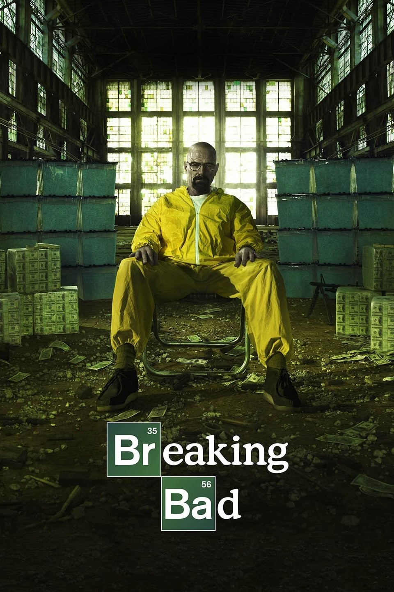
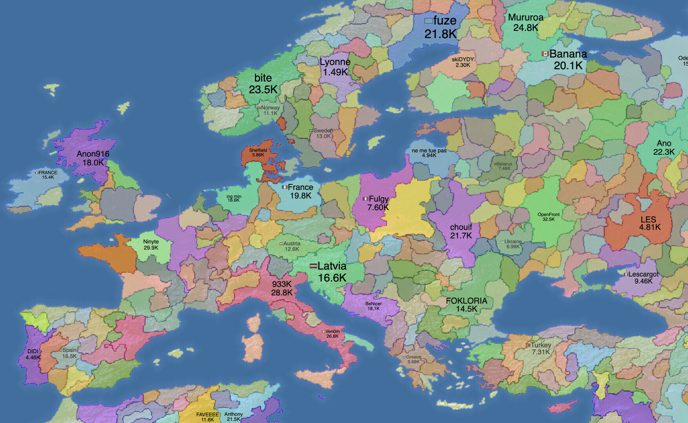
Hey everyone, Rik here(short for Rithwik). I love watching different kinds of tv shows, movies, playing video games, and reading books.
Some of my favourite TV shows include: Breaking Bad, Stranger Things, Better Call Saul, Modern Family, and many more TV-SHOWS from all genres.
My favourite movie series includes the Marvel series, animated Spiderman movies , and my favourite movie is The Pursuit of Happyness . Additionally, I am looking forward to watching the new Odyssey and the new Spider-Man movie coming up.
I also like reading the Geronimo Stilton book Series and the Diary of the Wimpy Kid series. Another book that I recently enjoyed reading was Animal Farm.
My favourite video games include Minecraft, Fortnite, Rocket League, and Brawlhalla. I play Minecraft on my laptop (Java edition), and the rest of these games I play on my console, which is an Xbox-One-S. A recent game I downloaded and played on my Xbox One S console was the new harry potter game!
A new niche game that I've been playing is Openfront - you are set in spawn with a bunch of other players on a randomized map; the map could be of Asia, Europe, Antarctica, even Mars, and you are trying to conquer the whole map!
I also love writing blogs and storytelling.
I wish you would join me on my journey and read my Awesome movie reviews, Insane TV-Show Reviews, what video games to play next, what books to read?, and a bit of my own creative stories.
Yesterday, my friends and I were looking for a horror movie to watch. We were scrolling through Netflix until we landed on the babysitter movie.
We watched the trailer; we liked it and decided to watch the movie.
Characters:
The babysitter: Bee
12 year old boy: Cole
12 year old boy's friend: Melanie
Summary
The movie starts off with a very shy boy called Cole. At school, he is a bit of an outcast, as he gets bullied by his peers.
At home, we can see that he doesn't like taking risks - he has the chance to drive a super cool race car, but he is too afraid.
Cole is also one of the only kids his age who still has a babysitter.
Cole and his babysitter really get along; they play a lot of games together, and his babysitter even fights off his bullies for him.
As time passes, in some instances we can tell that Cole has a crush on his babysitter, Bee.
Now, Cole heads to school the next day and talks with his friend, Melanie.
Melanie tells him that once he goes to sleep, his babysitter probably spends time with other boys and her friends, because that's what all babysitters do.
Along with that, Cole's parents were going out of town this weekend.
So cole decided to find out for himself if Bee spends time with others inside his house.
The day passes; Bee and Cole have a lot of fun together, then Bee puts Cole to bed, but Cole decides to stay awake.
After waiting for a while, he decides to hide behind the stairs and look towards the living room. In the living room, his prediction was correct; he saw Bee with a bunch of her friends. They were playing a game.
Cole kept watching, and now the twist happens.
Are you ready?
Bee takes out 2 knives and kills her friend. Bee was a murderer! Cole was shocked and decided to go to his room and call the police.
He overheard Bee and her friends coming to take his blood next(for what reason you may ask? Well, we don't know yet), and he pretends to be asleep.
They take his blood , and then Cole tries to make a run, but Bee is right behind him and catches him in the act.
Now he is tied up in a chair in his living room.
The cops arrive, but Bee and her Friends are Maniacs and , kill the cops. Now Cole has to fight off Bee and her friends all by himself; he somehow manages to do that, and his parents come to save him.
Filling in the gaps | Explanations
While Cole was coming home from school, one day he saw Bee flirting with another guy. This happened to be the guy that she killed in the living room. The rest were her friends.
We could kind of see this coming, because Bee was way out of that guy's league, and she was obviously flirting with him for a reason.
How did Cole get away from Bee and all of her friends?
We know from the start of the movie that Cole is a bookworm. He has insane skills and knows how to operate a variety of different things, and he uses that knowledge to trick Bee's friends.
He uses his intelligence to get away from Bee's friends and make weapons that he uses to protect himself. Of course, a LOT of luck is on Cole's side.
You can say that the whole plot of the movie revolves around the theme of getting out of the comfort zone and risk-taking.
Why? Because at the end of the movie, Cole finally races the car into his house(sounds kind of crazy, I know), and ends up crashing into Bee and killing her .
Additionally, another thing that doesn't make sense was why didn't more cops come in after Bee and her friends killed two of the policemen?
Basically, Bee asked Cole for the codes to signal "all clear"(code used to indicate the cops that the mission was successfull) to the other officers on the remote they have. Under pressure, Cole had no choice
but to tell them the codes. This allowed Bee to signal to the cops that the site was all clear.
This still doesn't make sense to me: how they weren't able to recognize the cops voice, or there must have been some voice input on the cops' remote.
This point in the movie was where the things didn't seem tied up for me.
If you are wondering why Bee sacrificed her friend and wanted the blood of Cole. The explanation is coming up next:
Bee is part of this cult . She believes that whatever she wishes for will come true if she pours the blood of someone innocent on top of the bible with the blood of someone who's been sacrificed.
So the person Bee was flirting with was the one whose blood had been sacrificed, and Cole had the blood of someone who was innocent.
However, then again this is where the story's ends are kind of loose for me. Cole wanted Bee as a girlfriend, so he wasn't as innocent as we think.
This implies that no matter what, the spell wouldn't have worked, and all of Bee's effort would end up wasted.
Another loose end of the movie was when Bee caught Cole with her friend. However, She ended up not shooting Cole but just shooting her friend instead? Bee didn't even hurt Cole. Despite
Cole knowing all about her secret murders, and killing all of her friends. This means that despite doing all this, Bee actually had a good heart on the inside, and had feelings for Cole.
The final concern that I have is for Cole. Which is how would he explain this crazy story to his parents, who were on the trip! Hahaha.
Final Verdict
Now I will begin to list my ratings of the movie with explanations. In this blog, I am going to rate the movie based on some categories that I have selected.
If you have suggestions on what criteria to include in the next blog please let me know by emailing me at (Rithwikcoolcoder7878@gmail.com). The criteria I have curated will include
Story, Characters, Acting Performances, Pacing, Villain, Ending, Personal Enjoyment.
Story
The movie had a very unique concept - babysitter turned murderer , and at the start of the movie we couldn't even tell that Bee could be a murderer. It was masked pretty well.
There were some plot holes, and some things that didn't make sense, as mentioned above, so that will take a bit of a negative impact on the rating of the story.
Overall, I would rate the plot/story a 7/10.
Characters
I think this movie had a complete range of characters. The biggest character development was visible in the character of Cole. From
being too scared to move the car one inch, to fully ramming it into the house to kill Bee - I think you can agree that sounds like insane character development.
The babysitter and her friends were very diverse; one of her friends was a cheerleader, one was a jacked jock, one of her friends was an artist, and there was also a funny dude.
The concept of the character that the babysitter had and how she became the murderer was really cool and completely unexpected, so I would say that the characters in this movie were excellent.
Overall, I would rate the characters a 10/10.
Acting performances
Despite this being the actor of Cole: Judah's first movie and at a very young age. He was able to portray the character of a scared, nerd child and an unstoppable killing force very well.
His acting was fantastic. The babysitter, the actress's name is Samara, had an amazing performance. This was also one of her very first movies. The best acting scene in the movie was when she called
her friend to Cole's house and seduced him and immediately killed him after; the transition from romantic to killer was insane. Additionally, the babysitter's other friend, King Bach, did some awesome comedy and made us all laugh.
So I think we all can agree that the acting performances were impeccable.
Overall, I would rate the acting performances a 10/10.
Pacing
The movie's runtime was 1 hour and 20 minutes, so it was a reasonably short movie.
An average movie's runtime is 1 hour 40 to 1 hour 55 minutes. The time went by pretty fast as it was a fast-paced action movie.
However, the start was too slow, which is why I will deduct a few points from this category.
Overall, I would rate the pacing of the movie an 8/10.
Villain
The choice of the villain being the babysitter was a very unique part of this movie. It was totally unexpected and a good twist.
However, the villain didn't try their very best; they had an opportunity to kill Cole, but they let their emotions take over, and the plot was against the villains as well.
I would say that the villains were reasonably weak in this movie and kept getting super unlucky. This made it feel too easy for the hero, and that's why I would deduct points from the villains.
Overall, I would rate the villains of the movie a 6/10.
Ending
At the end, I was expecting at least some twist or some sort of major event to happen. But this movie broke my expectations.
There was no twist, and at the end, the hero, Cole simply defeated the villain, Bee. The story also ended without fully tying up all the knots and answering all our question
which was unsatisfying. I was also super surprised, how there could be another movie, when he literally killed the main villain: Bee. It wasn't like the babysitter escaped or anything.
Overall, I would rate the ending of this movie a 4/10.
Personal enjoyment
This movie wasn't like a typical horror movie. There weren't many jumpscares, or scary scenes overall.
I would say it was more gorey , and it was very hard to get scared.
This is because whenever the scary scenes came, there was text that came on the screen which was very goofy and it made it impossible not to laugh.
Also one time, when cole's bully came the babysitter's friend had almost got him, but let him go just to catch his bully. Which didn't make any sense at all.
Due to such unexplained portions of the movie, gore, and comedic effects took away from the horror aspect of the movie. However, it was still enjoyable to watch and I felt entertained
for a majority of the film after the starting 20 minutes. The starting 20 minutes were very boring because they were trying to setup the plot. It would have been much better if they just jumped right into the action in my opinion.
Overall, I would rate the personal enjoyment of this movie a 5/10.
Rating
Adding all of these numbers up, the final rating ends up being (7+10+10+8+6+4+5)/70, which is a 7.1/10
Final Rating: 7.1/10
Obsession
Entry Two
Genre: Horror/Romance | Length: 1 hour 50 minutes | Streaming platform: 15$ on Youtube and Google Play | Rating: R
One month ago, the movie Obsession was going crazy over social media platforms. Me and my friends were getting recommended a lot of instagram reels
based on this movie. We all enjoyed watching the reels and decided to go watch the movie for ourselves. When we went and watched it in the theatres, the good seats were all taken!
The movie must have got a lot of hype, we had to end up settling for the front seats. We were hearing the audio one second after the scene had played. Along with that, during any scaring scenes
the audience surrounding us started laughing, which took away from the experience. This took a bit of a negative toll on our
movie-watching experience.
Characters:
Main lead actor: Bear
Main lead actress: Nikki
Bear's female friend: Sarah
Bear's male best-friend: Ian
Summary
At the start of the movie, we can see some friends having fun together at a club/bar. These friends
include Bear, Nikki, Sarah, and Ian. The friends enjoy their time at the bar and decide to head home. Ian is very sad about his beloved cat passing away, and everyone's trying to console him the whole night long. We can see from their time at the bar
that Bear and Ian are best friends and share everything with each other. While heading home, Nikki didn't have a ride home and asked her friends.
Bear, who was hesitant, decided to give Nikki a ride home. They sat in the car together, and Bear drove Nikki home. Nikki exited the car
and could sense from previous interactions that Ian had feelings for her. So she asked Bear, "Do you have feelings for me?" Bear was very nervous while answering this question.
He knew in his mind that he liked Nikki a lot, but he was just so embarrassed to say it, and so he missed his chance. He told Nikki, no we can just be friends,
and Nikki continued to walk home. However, Bear had another trick up his sleeve. To understand this, we must go back to a few days ago in the movie.
Bear went to this old magical store. While browsing, he found an item called a One Wish Willow. Essentially, you have to break this One Wish Willow in half,
and it will grant you a wish for anything you can imagine. But of course, this is obviously too good to be true. That's why the one wish willow packaging had
warnings all over it. Which was basically telling the buyer that the wish you make could have detrimental consequences.
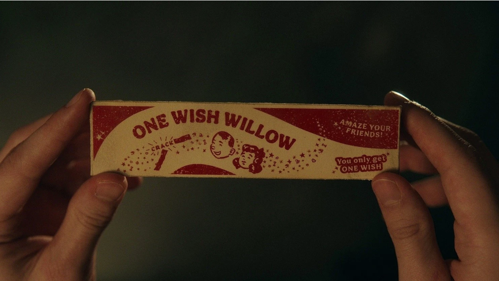
However, Bear was desperate for this wish
because he really loves Nikki. So, he decides to grab the item and heads to the cashier. The cashier then again warns him that people have come in complaining, crying about
their wish going on. He said that he heard complaints from people that the One Wish Willow had literally ruined their lives. Despite knowing all this Bear, still decided
to purchase the One Wish Willow and head out of the store. Now we are going to go back to when Bear is in the car, after he dropped off Nikki. Bear opened up this One Wish Willow,
thought for a few seconds, whether to use it or not. But he decided to open it up, and he made a wish : "I hope that Nikki loves me more than anyone in the whole world." Then he cracked/snapped
the One Wish Willow. Now, Nikki starts walking back to Ian and asks him to come inside her house.
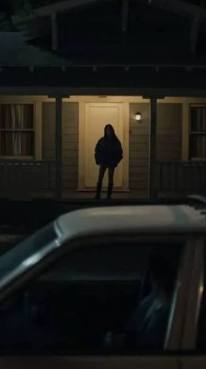
She told him she feels bad about his cat dying and wants to make love with him.
Now, we can tell that it's very obvious that the One Wish Willow worked and it was not a scam. Ian and Nikki had a lot of fun that night. The next morning, they both went to work.
It happened to be that all the 4 friends - Bear, Nikki, Sarah, and Ian worked at the same place. The whole time while working, Nikki was staring at Ian and smiling, almost as though she was obsessed with him.
Now, although Bear liked this attention he was starting to get a bit creeped out. He decided to discuss this with his male best friend, Ian, and he said yeah that's pretty wierd.
But life moved on, and over the next few weeks Nikki and Bear had a lot of fun dates together. Now, Ian noticed this and decided to talk with Bear about it. Ian told Bear that he and Nikki were secretly dating
for the past few weeks. He said it was pretty weird that all of a sudden she jumped onto you. Bear just called Ian jealous of his relationship and moved on.
A few days after, I believe it was Bear and Nikki's some sort of anniversary. Now Nikki's father was ill and had cancer, so Bear was naturally concerned about Nikki. Like a typical relationship, he also wanted to have
deep conversations with his partner. So he brought the topic up and asked Nikki about it. However, Nikki felt really uncomfortable and asked Bear not to talk about her father. Bear was still concerned, so he
decided to ask Nikki again about her father. This time Nikki threw a big tantrem in the middle of the restaurant and she said: "No no no, don't do that. I thought we were having a nice day.".
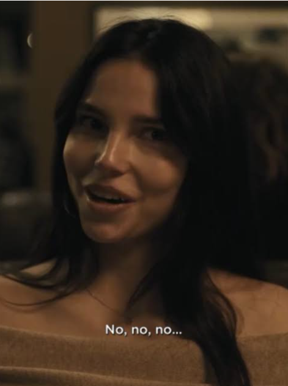
All of the people in the restaurant
were shocked, and now thought that Bear had done something really bad. Moving on to a few days later, Bear was working at the store while Nikki wasn't assigned a shift.
Nikki didn't want Ian to go, and when he left for work, she did nothing but stand by the door the whole day. She didn't even go to the washroom, and she ended up pissing on the floor. Bear came home and was shocked at the dirty floor
and screamed a bit at Nikki. Nikki reassured him and said she will take a shower and clean everything up for him. Bear was really concerned now, and decided to tell Nikki, that maybe we should sleep in different houses, for a while.
Nikki got really sad at this thought and started screaming towards Bear, 'Why don't you love me'. Immediately afterwards, she picked up a stone and started hitting her eye saying, 'Wake up, wake up'.
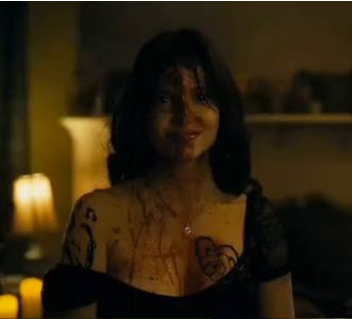
Which didn't really make that much sense to me.
Maybe it was the real Nikki, trying to wake up from the wish, but the meaning was really unclear. To get her to stop, Bear just decided to sleep with Nikki and stay in the same house for a while. The next day, Bear went to work. He opened up his lunch that
Nikki had packed for him. He took a bite of the lunch, and then he saw a note saying love - cat. This meant that the lunch she packed was what was still left of the funeral remains of Bear's cat. This was very weird and didn't make any sense either.
Now Bear was really desperate to just cancel this wish. So, he went in his car, looked for the One Wish Willow packaging, and called the number in the back for support.
The number picked up, and Bear asked the worker to modify his wish. The worker responded, and he said: No we don't really do that, would you like to cancel your wish instead. Then Ian said yeah, cancel. The worker responded yeah we don't really do that.
Now Bear was really frustrated, and he asked the worker how to end this wish. The worker said the only way this wish ends is if you end. So that basically implied that he had to kill himself.
Out of frustration, Bear just cut the phone.
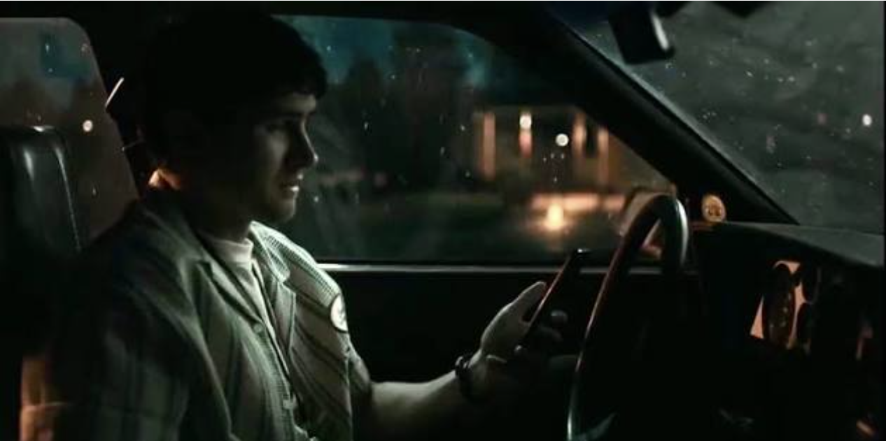
Bear then discussed this whole situation with his work buddy, Ian, and he said maybe we should host a boy's night so you can get away from Nikki for a while.
Bear tried really hard to convince Nikki to let him have a boy's night. Nikki was not convinced and decided to come anyway. When they arrived, Nikki was really shocked,
because she saw that Sarah was there; a female on a boys' night. Now Nikki was really frustrated. The night went on, and they decided to play a card-daring game, they did many different dares.
Now, it was Bear's turn to do a dare. He picked up a card, and it said: To kiss the person on the left. Before I move on, I need to go back and give you guys a bit of context. Over the past few weeks,
there were some moments between Bear and Sarah where they were having fun, and you could tell they were into each other. Now sitting, on the left-side of Bear was Sarah, and Nikki was enraged hearing this.
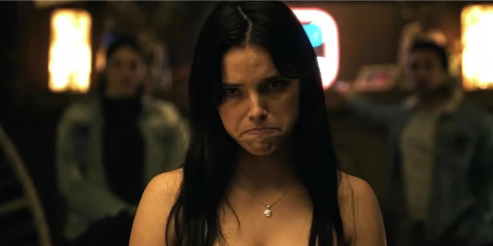
She pulled Sarah's chair and stood on the left side of Bear and kissed him. Now onto the night after this event, Bear got up to go to the washroom, and Nikki talked to him while sleeping.
Nikki told him to 'Just kill her', and said that the other Nikki who was obsessed with him was 'asleep'. Hearing this, Bear was infuriated and said, 'What is so bad about being with me anyway?'
Nikki didn't respond to that, and Bear went back to sleep. The very next night, Bear was on his bed looking at his phone. He received a text message from Sarah;
saying to meet her outside in the car. Bear sneaked out, making sure Nikki didn't see him leave. He went to Sarah's car. Sarah told him that Nikki isn't good for you, and that
you need someone more chill. Bear responded saying: Yeah, someone like you. Then Sarah responded: You were supposed to kiss me that night. After this, I experienced the greatest jumpscare of my life. Nikki appeared out of nowhere,
smashed the car's window and started banging Sarah's head against the steering wheel until she died .
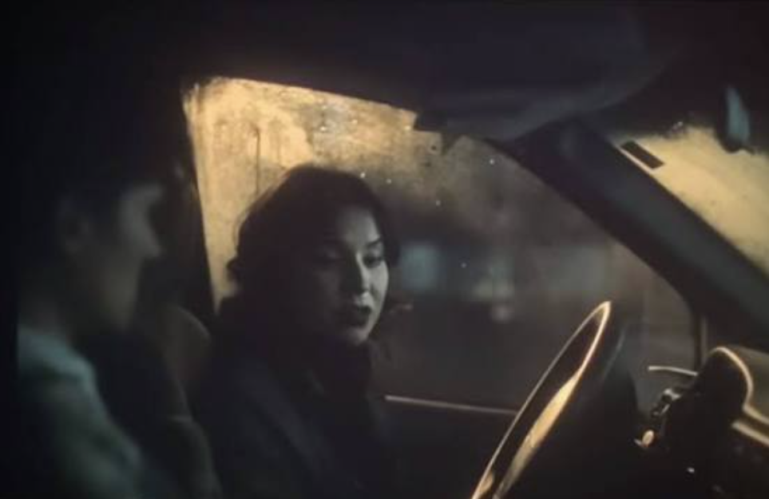
Bear was so shocked he was hyperventilating after this event. Then Nikki told him this is all your fault.
Now, Bear ran back to the store from which he bought the One Wish Willow. He grabbed the guy who sold him the One Wish Willow, and said you ruined my life. Then he asked
how do I reverse my wish? The shopkeeper said you can buy another One Wish Willow and get someone else to make a contradictory wish that cancels your wish. However, the rule is
that one person can only make a singular wish. After receiving this information, Bear decided to grab a couple of One Wish Willow and exit the store. In the car, he tried to make the wish that Nikki isn't obsessed with him anymore.
The one wish willow wouldn't break, because he had already used a wish. Then, he decided to go to his friend Ian's house. He explained the whole situation to him, but Ian just laughed and said this is such a scam.
He joked around and said I wish for a billion dollars, and tons of money started falling from the sky.
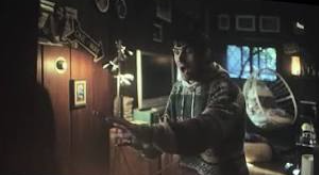
Now Bear was really frustrated. Now, he decided he had no option left but to ask Nikki herself to cancel the wish.
He went back to his house, and Nikki was covering up Sarah's body. He asked Nikki that you love me alot right? and Nikki said Yeah, so he asked her to cancel the wish he made.
Nikki said she won't do that. Right after this the funniest moment in the whole movie happened. Ian came in and said dude the money is real, we have a billion dollars. Immediately after
Nikki just shot him. She found a gun in the house and had it on her. Now Bear was done; he took the gun from Nikki and went to the washroom. He was right about to shoot himself, but then he realized that there were pills in the medical cabinet.
He decided to take the less painful route and swallowed the whole pill package. Suddenly, he decided to throw up the pills, we don't know why. He goes outside and starts kissing Nikki. However, in the background frame,
we can see a broken One Wish Willow, which means that Nikki wished for Bear to be obsessed with him. It was too late though; Bear died in Nikki's hand, and the pills had worked. Nikki started crying, but remember how at the start they said
that once Bear dies, the wish dies with him. So right when he dies, Nikki's wish breaks and, she throws Bear's body on the ground and starts crying . That's the end of the story.
Filling in the gaps | Explanations
I know a lot of the things in this movie didn't make sense, so now I will be trying to demystify some of the events that happened in the story.
At the start of the film, why did Bear use a One Wish Willow to make a wish for Nikki to love him? Nikki asked him: 'Do you have feelings for me?' Bear could have just said yeah.
I think the answer to this was because Bear was very nervous to disclose his feelings to Nikki directly. He was scared of the fear of rejection: what would happen if she rejected him?
Then, he could have even lost her as a friend.
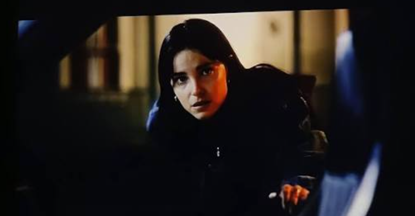
Secondly, how is the One Wish Willow product still available in the stores? Many people's lives have been impacted, so in my opinion, they should have just taken the One Wish Willow off the shelves.
Unless this One Wish Willow is being delivered by some evil organization that wants to ruin other people's lives . Next, when he called the One Wish Willow help line.
He asked them how he could cancel the wish. The answer the person responded with was that the wish ends when he ends, implying that he had to kill himself. However, when he went in-person to the store, the shopkeeper gave him another idea.
Which was to ask someone else to make a conflicting wish. So why didn't the person on the helpline also recommend this option? I believe this was a writing mistake. I don't feel that there could be another reason for this.
Moving on, I suppose that Bear loves Nikki a lot, right. So why didn't he follow what she wanted, when she asked him to kill her? Why did he respond, 'What's so bad about being with me?', she can't even answer that. Do you know why?
Because the real Nikki was never with him. This insensitive comment from Bear really shows his real nature. He did everything for himself. This scene really shows us how Bear is the real villain of the Obsession movie.
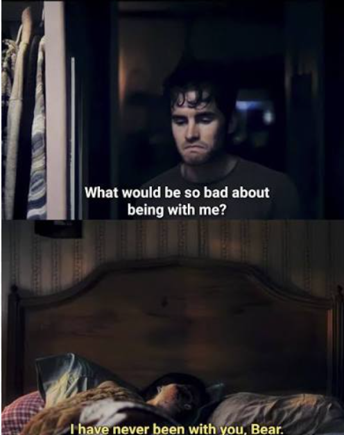
Next, why did Nikki cook Bear's cat's remains and give them to him? This question will kind of branch into another theory that I will tell you, guys. The soul of Bear's cat that just died might have gone into Nikki. Remember Bear's wish
was 'I hope that Nikki loves me more than everyone in the whole world'. Well, do you know who loved Bear more than anyone in the whole world? His cat did. Additionally, cats sometimes aren't trained how to use the toilet.
So, the cat might piss on the ground. This is very similar to how Nikki peed on the ground while waiting for Bear. This theory however, still doesn't answer why she cookedBear's cat for him.
What I learnt from reading online, a possible theory for why she cooked the cat. Do you remember how the real Nikki was awake and telling Bear to kill her, when the obsessed Nikki was asleep? This means that
the real Nikki may be giving negative advice to the obsessed Nikki. Telling her that since Bear likes food, she should cook his cat. She may be saying this to take revenge on her. This is also how she grabs the stone and starts hitting her eye while saying
'Wake up'.
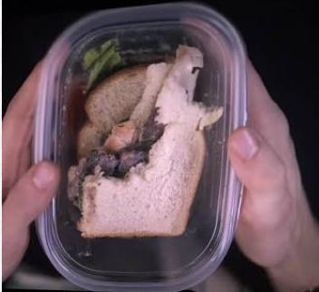
Next, why did Bear start throwing up the pills after eating them? Did he not want to commit suicide anymore? He threw up the pills because Nikki used the One Wish Willow to make Bear obsessed with her. So of course, now he didn't want to die anymore,
and he wanted to make love with Nikki. When he dies , the real Nikki just drops his body to the ground. She doesn't even care that he sacrificedher life for her.
This could potentially be because she was traumatized that she had caused 3 peoples death , but the case still doesn't sit right with me. Because I thought even before, Nikki and Bear were good friends.
We all know that Ian is a very good and loyal friend to Bear. Right after he realized that he got 1 billion dollars, he came straight to tell Bear and celebrate. Although he didn't help Bear with conflicting the wish, we can still agree he was a pretty good friend.
From that point, when he realized Ian used up his wish. He could have still gone and asked others to make a conflicting wish. Why would he go to Nikki to make the wish? There is no way he thought this through.
The reason for why he went straight to Nikki, I think was, because his other friend, Sarah, was already dead and he didn't have any other close friends. He probably thought that Nikki loved him a lot and would do anything for him, but that was obviously not the case.
This could also be because the writers wanted to manipulate the story's ending, which is fine. Let me know if I missed anything or if you guys want any theories or explanations in my email: Rithwikcoolcoder7878@gmail.com.
Final Verdict
Now I will begin to list my ratings of the movie with explanations. In this blog, I am going to rate the movie based on some categories that I have selected.
If you have suggestions on what criteria to include in the next blog, please let me know by emailing me at (Rithwikcoolcoder7878@gmail.com). The criteria I have curated will include
Story, Characters, Acting Performances, Pacing, Villain, Ending, Personal Enjoyment.
Story
The movie had a very unique horror/romance story. We have never seen a story like this before, which is why this movie was a mega-hit on social media platforms.
There was also a bunch of comedy scenes that were really funny, so I would say overall the story had been written pretty well.
However, there were a few things open to interpretation, and that didn't make sense in general. Such as Nikki holding a flowerpot over her face.
There is a reason they left these things open to interpretation, though, so it could feel like a real horror movie, and so we keep discussing fan theories over the internet, and start hyping it up.
Overall, I would rate the story portion of this movie an 8/10.
Characters
Looking at the film, a love triangle was visible. This is very common in other films as well, so it was nothing unique.
The answer-phone guy from the One Wish Willow had a very sarcastic vibe, which was a very well done character. Along with that, Bear's friend Ian
had a pretty good comedic character. He made some crazy jokes and added more character into the film. The twist of Bear actually being the villain, written into the film, was fantastic.
The line he said, "What is so bad about being with me anyway?", showed his real character and that he was the actual villain.
Overall, I would rate the characters an 8.5/10.
Acting Performances
Inde Navarrate(the actor of Nikki) had one of the best performances of 2026. She showcased amazing emotional depth.
Despite this being one of her first films, she put up an insane performance and has gained a lot of fans. Apart from her, the whole acting crew did an amazing job.
Cooper Tomlinson(actor for Ian) did an amazing job in giving the comedic effect and making us laugh.
Overall, I would rate the acting performances of this film a 9.5/10.
Pacing
The runtime of this film was 1 hour 50 minutes, which is very average. The movie felt very fast-paced.
I couldn't tell that 2 hours had passed by so soon! The beginning was also very interesting, and I would say the movie
kept us entertained till the end. Every scene had something impacting the plot, and there weren't many filler scenes at all.
Overall, I would rate the pacing of the film a 9.5/10.
Villain
Everyone expects the villain of the film to be Nikki. But the real villain was Bear; the way this was written in was fantastic.
Bear was acting selfish throughout the whole movie. He killed himself, and let Nikki deal with the consequences of killing 3 people.
She would probably spend the rest of her time in jail, it would be better if he just did what Nikki asked. The contradiction of Nikki not being the villain
and Bear actually being the villain was crazy. Which is why I think, the villain part of this movie was insane.
Overall, I would rate the villain section of the movie a 10/10.
Ending
The ending left me very unfulfilled. I feel it wasn't fair that Nikki just threw Bear's body on the floor after all that they had been through.
I also had many questions about what would happen with Nikki moving forward. Would she go to jail? Would she somehow get away with all this?
The ending didn't answer these questions. Also, it didn't make sense that Bear would just kill himself when he could have gone and asked
literally anyone else to make a conflicting wish and end this all simply by doing that. Due to these unanswered questions the ending felt a bit off for me.
Overall, I would rate the ending of this movie a 5/10.
Personal Enjoyment
I really enjoyed this film as it was my first horror movie in a while. The jumpscares, and the music accompanying it were on point.
I feel that the film would have been even more enjoyable if the audience in my theatre weren't laughing at every scary scene.
This will impact my personal enjoyment rating a little bit.
Overall, I would rate my personal enjoyment a 7/10.
Rating
Adding all of the numbers up, the final rating ends up being (8 + 8.5 + 9.5 + 9.5 + 10 + 5 + 7)/7, which is 8.2/10.
Final Rating: 8.2/10
The Odyssey
Entry 3
Genre: Fantasy/Adventure/Action | Length: 2 hours and 52 minutes | Streaming Platform: Exclusive on Theatres for now | Rating: R
The Odyssey was one of the most hyped up films to be released in 2026. I was really excited for it, since the director, Christopher Nolan, had directed many other
amazing films such as Interstellar, Oppenheimer, and Inception. The film also had popular actors/actresses such as Matt Damon, Travis Scott, Zendaya, and Tom Holland.
Right when we were about to watch the films, we saw that the Rotten Tomatoes score was 98%, so we knew the movie had to be really good.
There is a bit of background knowledge you need to have before watching this movie, such as knowing about the Trojan War. You should also know about Zeus's Law, which
is that any travellers must be treated as guests in your house and you should give them shelter, food, and water, because you never know if they are a god in disguise.
The recommended way to watch this movie is in IMAX 70mm, but we weren't able to as it was fully booked. The film is filmed for 70mm IMAX, so if you want the best experience,
I would recommend watching it in that format.
Summary
The movie starts by showing us Odysseus, who is the king of Ithaca. He and the king of Mycenaean's brother, Agamemnon, decide to launch a war on Troy.
Agamemnon launched this war to avenge his brother's abducted wife: Helen. The troys are presented with a gift: a Trojan Horse.
Odysseus and his army are hiding inside this horse; the troys accept the horse as a gift, open their gates, and take it in. During the night, Odysseus and his army
come out of the horse and open the gate for Agamemnon and his troops to enter. Together, they destroy the city of Troy and win the war.
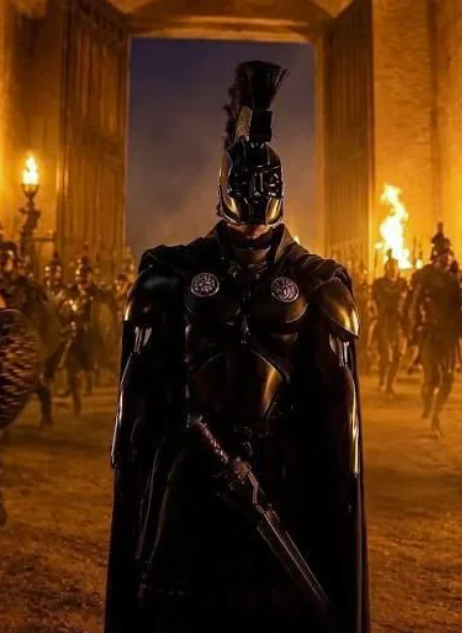
This Trojan War took 10 years, but this movie isn't about the war; it's about the journey back from the war. The war took a very long time,
and at the end Odysseus was left with 600 of his men. Now, they had to take a 10-year-long journey back home. Odysseus encouraged his men to start
the journey now, but his men decided to party for one day. This gave Troy's allies time to come and kill some of Odysseus's men.
With the remaining men, Odysseus began his journey back home to Ithaca. The first stop the troops made was the island of the Cyclopes(they didn't know this).
The men stumbled upon a cave and decided to take shelter there for a night. They find a lot of cheese and sheep and goats in the cave.
Then, they see the one-eyed giant: Polyphemus, wake up.
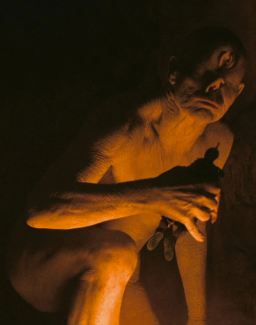
He sees the men, grabs two, and eats them. Afterward, his men try to leave, but the giant already covered the exit with a big rock.
The soldiers try to move the rock, but it is too heavy for them. Odysseus decides to take a sword, and while the giant is sleeping,
he stabs him in the eye. The giant screams in pain and moves the rock to go outside. The sheepall start leaving the cave, and the men leave
with them. The cyclop sees the men leaving and starts chasing them; the men leave on their boats just in time. One of the men recognized the giant
and that he was the son of Poseidon. Now the men knew it would be very hard to sail the seas, because Poseidon is the god of the ocean.
During the voyage, the men were faced with many storms and were very grateful when they landed on an island. On the island, they saw a boy;
he started laughing and screaming, and then ran away. A few seconds later, a bunch of giants in armour appeared out of nowhere and started attacking the men.
The men started running away to the boat, and only a few were able to get away.
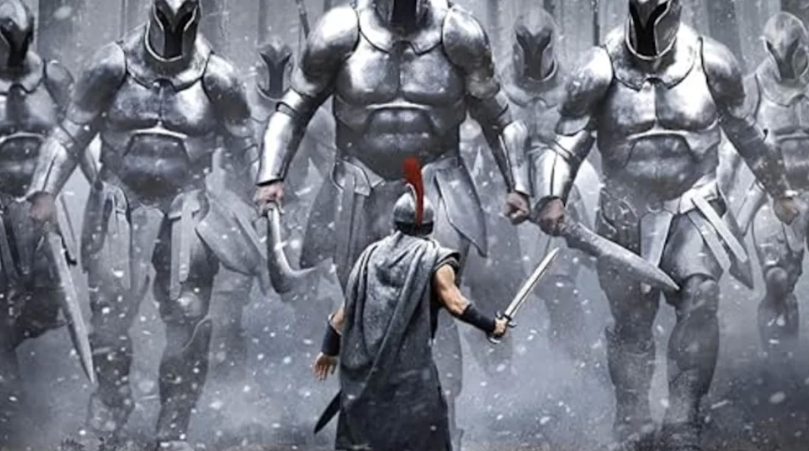
After that, they left in their ships and reached a new island. They saw lions and other animals on this island, and the men were very hungry for food.
They stumbled upon a house, and they found a female. They asked the female for food, and she gave it to them. But it turns out that the lady was a witch,
and the food turned the men into pigs. Odysseus was behind and found the house later; he saw the witch, and she offered him food. Odysseus found the rings
of one of his men on the table, and realized this was a trap. He threatened to kill her crow if she didn't turn the pigs back to his men. The crow
turned out to be her sister, so the witch decided to turn the pigs back into men. Then they asked the witch: how to make their way back to Ithaca?
She told them to go to the underworld, and the people there would tell them where to go next. The men got in their boats and started making their way to the underworld.
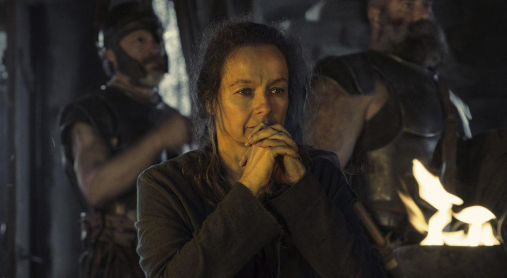
The men have to climb through a hole to reach the underworld. Many bodies start rising from the underworld.
Odysseus sees one of his soldiers in the underworld, he gives him an item to return to his father. Then, Odysseus
is very surprised to learn that Agamemnon was in the underworld. Odysseus asks him how did he end up here? It was a very
straight and easy path back to his kingdom. Agamemnon told him that he reached his kingdom, he was greeted with flowers and
grand festivites. After those ended, he went to make love with his wife: Clytemnestra. However, she was mad at Agamemnon for leaving
her to go to the war. She ended up betraying him and stabbed him with a knife. Agamemnon adviced Odysseus to go in disguise, and not to expect
a grand entrance when returning back home. Then, they told Odysseus about the two routes he could take. First, the wandering rocks which break the ship,
no one has survived these before. Second, a 6-headed monster: Scylla, who would consume only 6 of his men, but the others would survive.
After, the men in the underworld started chasing Odysseus and he had to run back to his ship and get out. These men were the ones who died due to Odysseus's mistakes,
so they wanted revenge.
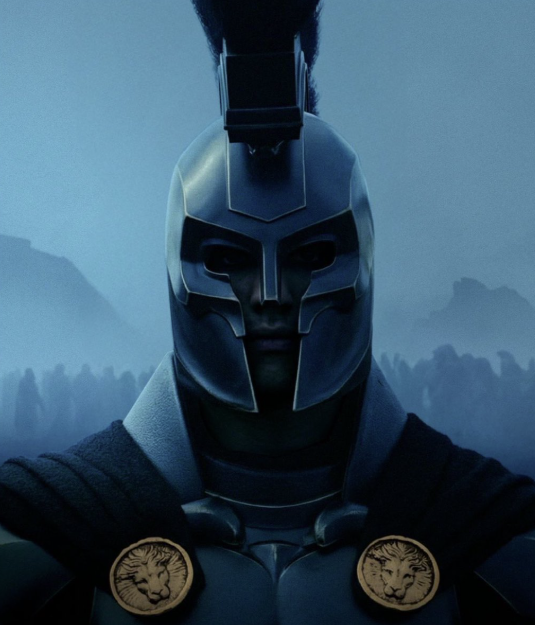
Odysseus and his soldiers escape the underworld and start sailing towards the island of Thrinacia. While sailing, they realize that they are about
to face sirens from the mermaid, so they all put earwax on. These sirens make you hear everything you ever want in life, almost like a dream. They guide you to the mermaids,
once you reach the mermaids, they kill you, so it's sort of like a trap. Afterwards, Odysseus chooses the Scylla monster route, and it takes 6 of his soldiers.
The rest of Odysseus's men were very mad, because he didn't tell them this was going to happen. But he told them that if we took the other route, all of us would have died.
Now, as they are reaching the island of Thrinacia, Odysseus tells his men not to eat any cattle. They were only allowed to eat fruits on the island. If they ate
the cows there, they would all be cursed and would die in a sea storm, and only Odysseus would survive. The crew survive on fruits for a while, but after they really want to eat meat.
They eat the meat secretly from Odysseus, and then prepare for the voyage to Ithica. The curse was set by the Sun God, and it was right, in the next passage only Odysseus survived.
He lands on the island Calypso, unconscious. Here, he stays trapped for 7 years by Calypso, she provides him with food, shelter, and takes care of him.
After all these years, he finally remembers about the past voyage, and remembers to sail back to Ithaca. This is where the story began, Odysseus was recalling all these pasts events.
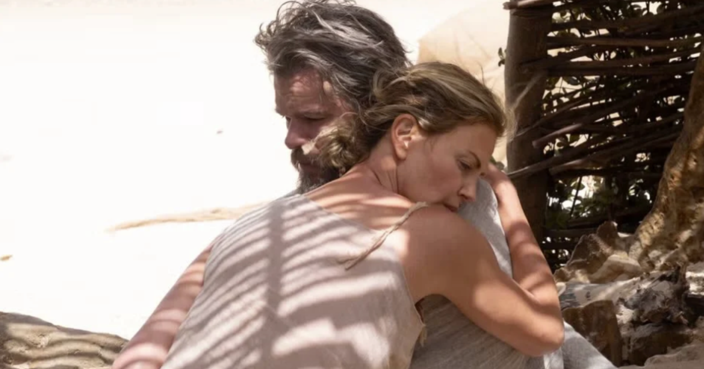
Now we are going to switch the story to Odysseus's son's(Telemachus) point of view. Telemachus and his mom, the queen, Penelope, has been unmarried for 20 years.
A lot of people gather in the castle, waiting to pounce on the chance of being her husband. Penelope however isn't ready to be married. Telemachus goes on a trip to pylos and sparta
to try to find details about his father; he still thinks he is alive. In Sparta, he gets to know by king Menelaus(Agamemnon's brother) that Odysseus was still alive.
The suitors(one's trying to marry queen Penelope) make a plan to kill Telemachus, but he gets away.
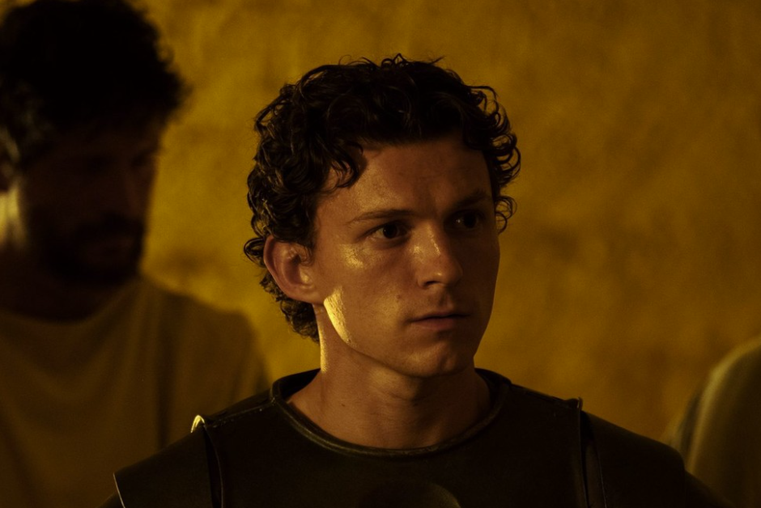
Odysseus ends up on a shore in Ithica. He disguises himself as a begger and enters his city. He meets up with Telemachus(His son), but doesn't reveal his identity.
Odysseus helps him fight off some enemies. So, Telemachus decides to invite him in the castle. Odyssey sees his old dog, and he recognizes him. This makes Telemachus realize
that the beggar was the king and his father. Odysseus enters the room with all the suitors and sees how they are disrespecting the space. He starts begging and asking them for money.
In the night, Odysseus goes to his wife Penelope, and encourages her to find a new husband and to do a contest. She starts a contest to find her husband which is to shoot a bow at a target.
None of the suitors were even able to string the bow. Then the beggar, asked to try the challenge, everyone laughed. But Odysseus stringed the bow and shot at the target.
Everyone knew this was Odysseus and started running away scared. He started attacking them all with the help of his son Telemachus. He killed almost all of them.
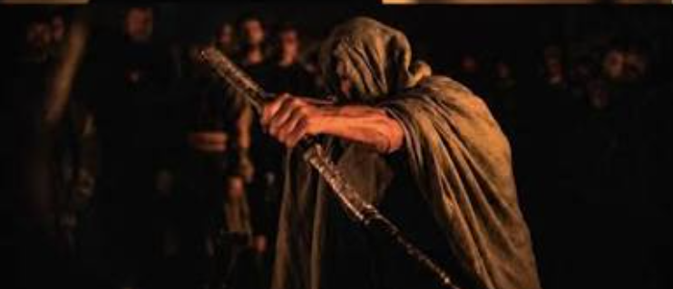
Because of this, he got exiled from Ithaca. He left on a ship with his wife Penelope. The next king of Ithaca was now his son Telemachus.
Cobra Kai has been my favourite TV serial for a very long time now. I started watching it in 2022, and the final season streamed in early 2025.
I also have a YouTube channel where I made a lot of Cobra Kai content: My Youtube Channel.
If you want to view any videos, you can do so on my YouTube.
Let's get right into this TV show review.
Summary
This show is a sequel to the Karate Kid films. So, if you haven't watched those, I would recommend you watch them first.
As the Karate Kid movies are about the winner - the story of Daniel Larusso, the Cobra Kai series is about the life of the loser of the tournament - Johnny Lawrence.
The story starts off by showing us the contrast between the successful Daniel Larusso, living with his wife and kids, owning a business, and having a really big house. He really has his life put together.
Then there is Johnny Lawrence, who has had a divorce with his wife, lives in a small apartment, and gets sober every night.
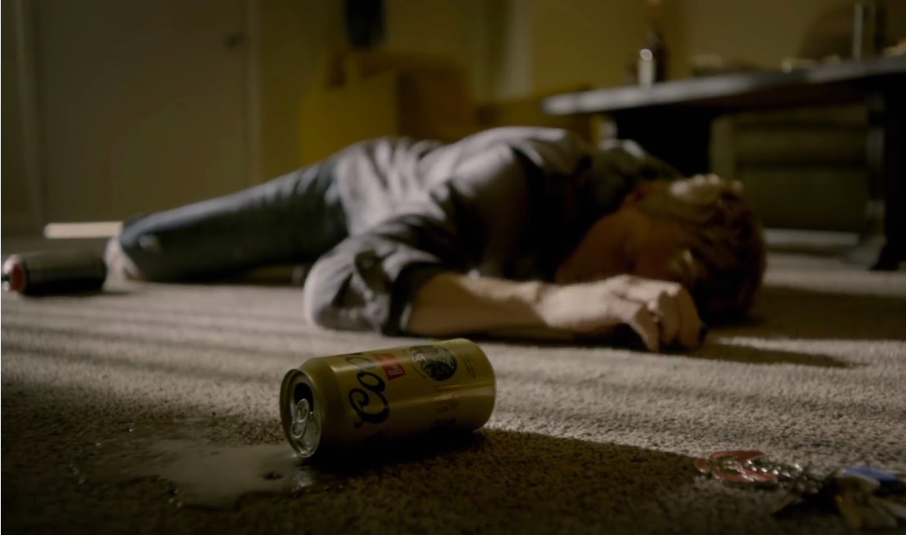
The difference between the two is crazy.
Then the story shifts towards a group of three boys who were bullied in school: Demetri, Eli, and Miguel. One day, Miguel was walking home from school, and some bullies started to beat him up.
This is where Johnny Lawrence comes into the picture. He saw these boys and decided to defend Miguel. He single-handedly defeated all 3 of the bullies, and the bullies walked away. The next day,
Miguel asked Johnny to open up a Karate Dojo to help him train and defend himself from the bullies on his own. Although it was hard for Johnny to rent a dojo due to his credit score, he managed to pull it off.
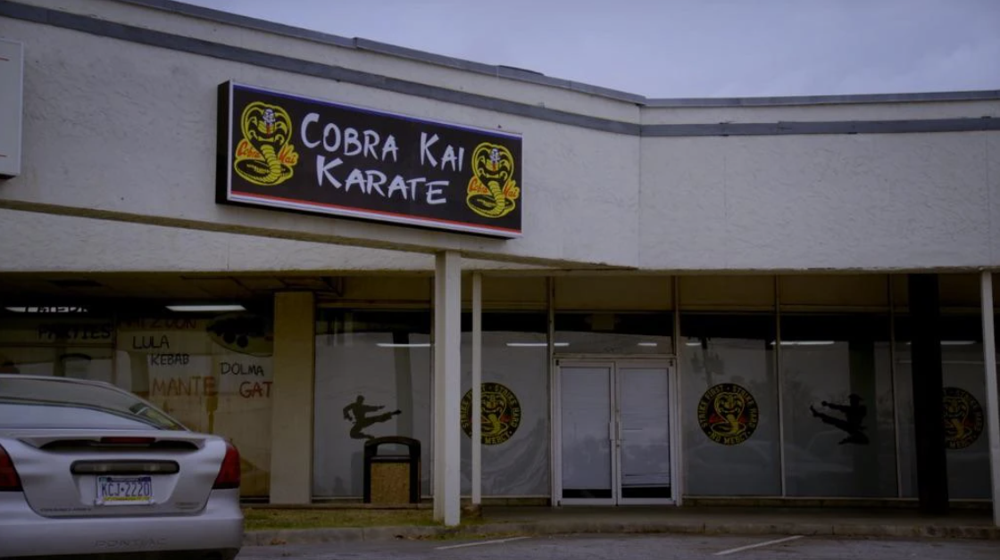
Now, on the side, Robby(Johnny's son - he didn't live with him anymore) was training karate with Daniel Larusso. Miguel trained very hard and ended up winning the first karate tournament, in which he defeated
Johnny's son: Robby. The next year, Robby got mad at Miguel, and a huge fight happened at the school. This was because of confusion over the girls they were supposed to date: Tory or Amanda. During this fight,
Robby threw Miguel out of the school's balcony.
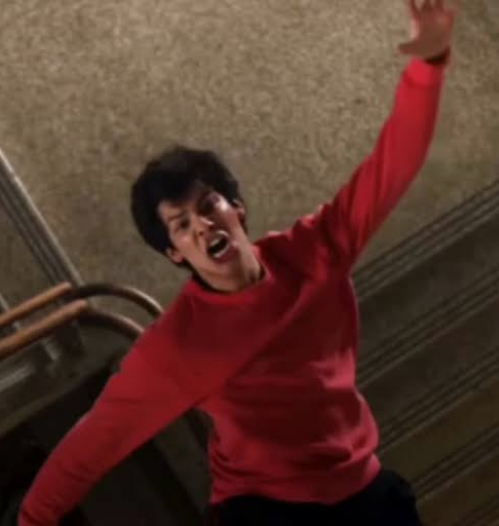
This resulted in Miguel being paralyzed and Robby going to prison. Miguel tries to recover throughout season 3 and season 4 of the show, and he eventually recovers with the help of Johnny. Robby
served a few months in the juvenile prison and was able to come out to perform in the next Karate tournament. This time, however, Eli(One of Miguel's 3 friends) won the major tournament because Robby and Miguel were distracted from
the stuff that happened before.
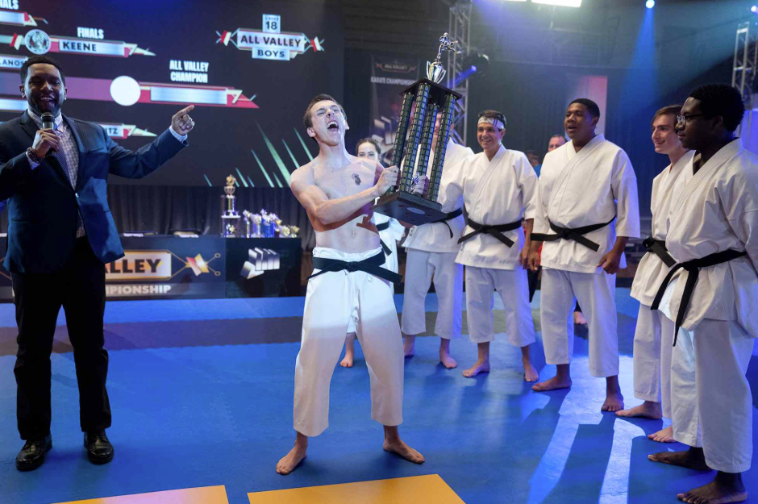
Now, Cobra Kai also had 2 previous owners who actually taught Johnny Lawrence when he was young: John Kreese and Terry Silver. They ended up forcing Johnny to give up Cobra Kai.
Johnny Lawrence ended up teaming up with Daniel Larusso and supporting Miyagi Do to defeat Cobra Kai in the final season. However, the Cobra Kai Dojo went a bit crazy. One of the members
brought a knife and accidentally ended up killing themselves.
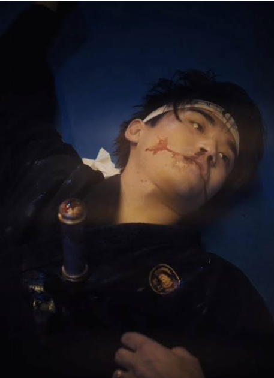
Due to this incident, Cobra Kai got removed from this tournament. However, Daniel Larusso knows that it's Johnny Lawrence's dream to
see Cobra Kai win the biggest tournament on the planet: Sekai Taikai. So he lets Johnny Lawrence go back to Cobra Kai. Miguel Diaz goes with Johnny Lawrence.
Cobra Kai then reaches the finals, and Miguel has to face an absolute monster who defeated everyone in the previous rounds: Axel. Miguel Diaz somehow manages to defeat him,
and Cobra Kai wins this tournament.
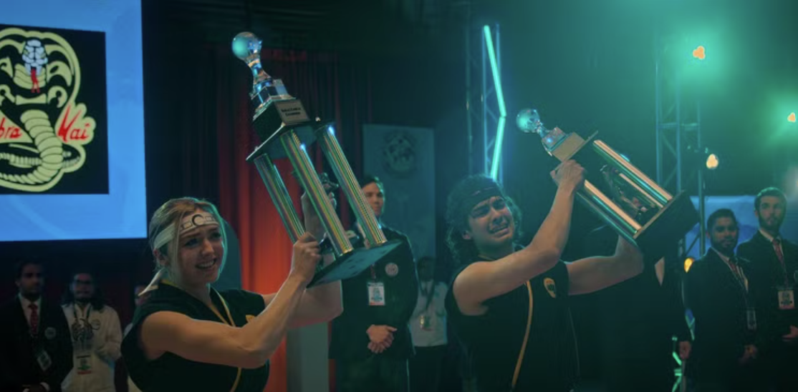
Filling in the gaps | Explanations
One question that comes to mind from the fight scene in Cobra Kai is: how did Robby get out of juvenile prison so quickly?
Should his sentence have been longer for pushing Miguel off the balcony, right?
The answer to this question is that his actions were considered as accidental; which is why he only had to spend 2-3 months in prison.
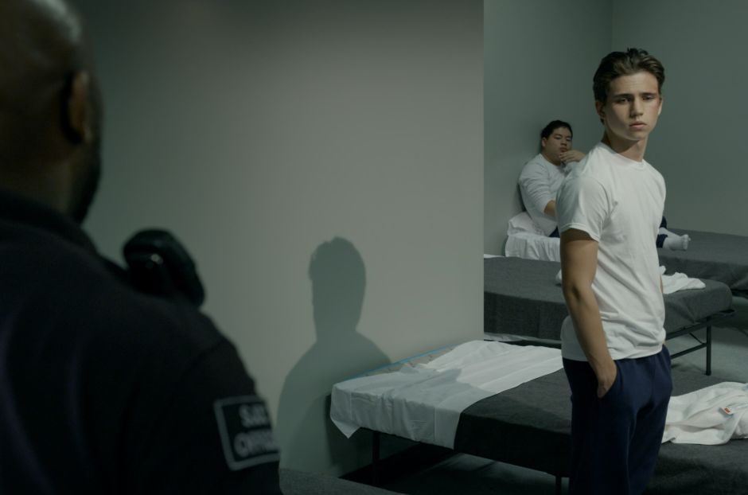
The three main characters in Cobra Kai can be seen as Hawk(Eli), Miguel Diaz, and Robby. Eli and Miguel won 2 tournaments, but Robby didn't win a single one.
Despite Robby being skilled at Karate, he wasn't able to win a single tournament. I think that the show rigged the tournaments, so Miguel could win 2, because they could have
easily let Miguel win one and Robby win the other one. I think this is because Robby was seen as the Villain for throwing Miguel down the balcony. The writers probably
thought it wasn't appropriate for Robby to win a trophy.
Next, due to some illegal activities, John Kreese was sent to prison in the TV show. He somehow escaped prison, went to Korea(to recruit new Cobra Kai members), and came back
to participate in the Sekai Tekai. This does not make sense at all, because most countries have strong law systems, especially the USA. There is no way they would have allowed this
in the real world. This is an instance of plot advantage that had been given to John Kreese, and could be a sign of bad writing.
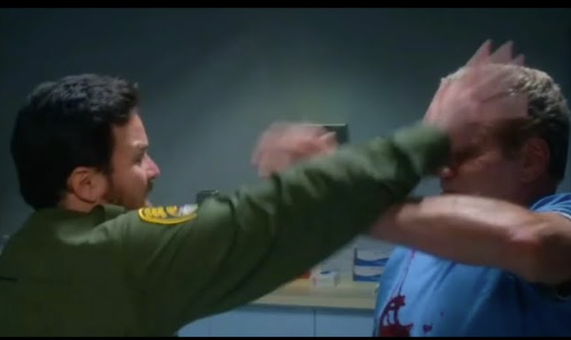
There were many fights, including the one in the school that I mentioned before. After so many fights, you would expect that some parents would get involved.
The show did not show any parents getting involved, except for the main ones: Daniel Larusso, and Johnny Lawrence. In the real world, more parents would get involved.
Especially since the fights were on a massive scale and so many children were getting involved.
Terry Silver and John Kreese being able to fight with Johnny Lawrence and Daniel Larusso was also very unexpected. These guys are 20-30 years older than them, and
they are able to beat them in a fight, shockingly. I would expect that Johnny and Daniel would be winning the fights because they are younger and therefore would be able
to fight better.
Final Verdict
Now I will begin to list my ratings of this TV show with explanations. In this blog, I am going to rate the TV show based on some categories that I have selected.
If you have suggestions on what criteria to include in the next blog, please let me know by emailing me at(Rithwikcoolcoder7878@gmail.com). The criteria I have chosen
includes Story, Characters, Acting Performances, Villain, Ending, Personal Enjoyment.
Story
The Cobra Kai story has a lot of things that don't make sense, which we went over while filling in the gaps. The writers failed to include a lot of things.
Such as the characters' parents, and Robby being let out of prison so soon. Miguel also recovered from a spinal injury after falling down a bunch of stairs, and that too in just one year,
which is totally unbelievable. On the positive side, they were able to effectively complete the franchise by showing us the winner's and loser's side. Although Johnny lost in the first Karate Kid movie.
This TV show was his redemption arc to end up winning a karate tournament. Although he didn't win, his student(Miguel Diaz) won which is an even bigger accomplishment.
They tied up Johnny Lawrence's story perfectly, which is what I really liked.
Overall, I would rate the story a 7.5/10.
Characters
I think that they did a really good job in using a wide variety of characters. They introduced a lot of different new student characters, such as
Hawk(Eli), Miguel, Robby, Tory, Sam. Along with bringing back a bunch of old characters such as Johnny, Daniel, Terry, John, Chozen. They were able to bring back
a lot of characters from the Karate Kid movies despite the TV show being created almost 40 years after the movie. Which is an accomplishment in itself.
Even when they introduced many new characters, they gave each and every character enough plot and development to make the show enjoyable.
Overall, I would rate the characters a 10/10.
Acting Performances
William Zabka(the actor for Johnny Lawrence) had a really great performance. He was really able to deliver insane emotions
during the crying scene where he was telling John Kreese about how incomplete he felt for not winning the karate tournament when he was younger.
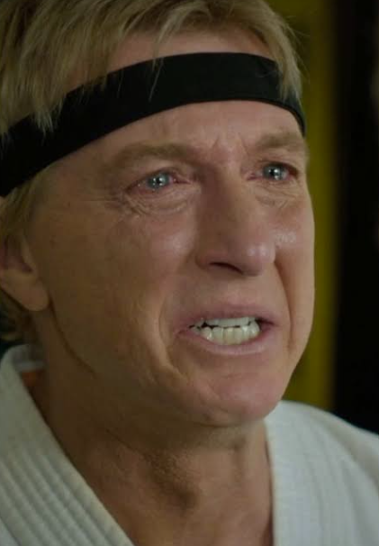
Martin Kove(actor for John Kreese) also had an insane acting performance despite being 83 years old, acting this well at that age is really impeccable.
Overall, I would rate the acting performance a 10/10.
Villains
The villains in this TV Show had insane plot advantages. Such as, John Kreese - he somehow escaped prison, went to Korea, and came back without getting caught.
Same with Terry Silver; he was so rich he was able to escape prison using his connections. The villains almost felt unbeatable, which is what made the show an absolute thriller.
Overall, I would rate the villains a 10/10.
Ending
The ending was really satisfying. Johnny Lawrence was able to represent Cobra Kai, and in fact, in the final round, he was fighting the other dojo's sensei. He was able
to complete his childhood dream of becoming a karate champion. However, I really wanted Robby to win at least one karate tournament, which he wasn't able to. So his story was left a bit incomplete.
Overall, I would rate the ending a 9/10.
Personal Enjoyment
This is my favourite TV Show of all time. My personal enjoyment of this is off the roof. I really enjoyed watching this, and actually started to binge-watch it when I had a cold.
It really helped me keep my mind off it and be immersed in the story. The show showcased some great teachings and has a very famous quote, "strike first, strike hard, no mercy" which I personally liked.
Overall, I would rate my personal enjoyment a 10/10.
Rating
Adding all of the numbers up, the final rating ends up being (7.5+10+10+10+9+10)/6, which is 9.4/10.